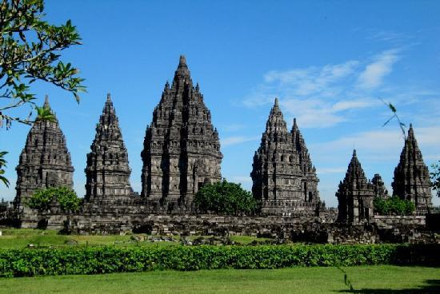
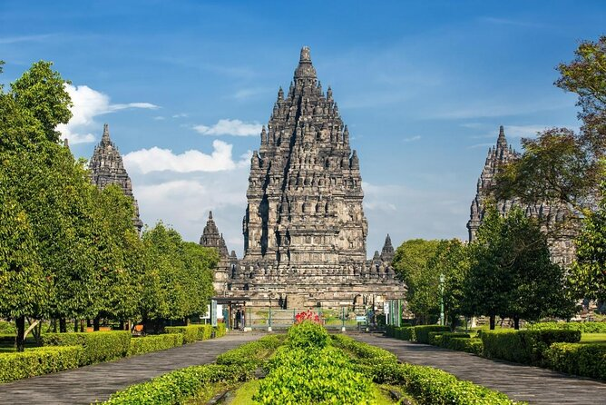

Prambanan Temple is the largest Hindu temple building in Indonesia which was built in the 9th century AD. This temple, which is also known as Rara Jonggrang, is dedicated to Trimurti, the three main Hindu gods, namely Brahma as the creator god, Vishnu as the preserver god, and Shiva as the destroyer god. Based on the Siwagrha inscription, the original name of this temple complex is Siwagrha (Sanskrit which means 'House of Shiva'), and indeed in the garbagriha (main room) of this temple there is a three meter high statue of Shiva Mahadewa, because the Syaiwa sect prioritizes the worship of the god Shiva in this temple.
 Tour Type : Pilgrimage
Participants : 1-10 Persons
Price : Rp50.000
Rating : 5 Stars
Categories : Religion & Temple